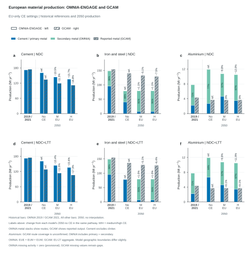
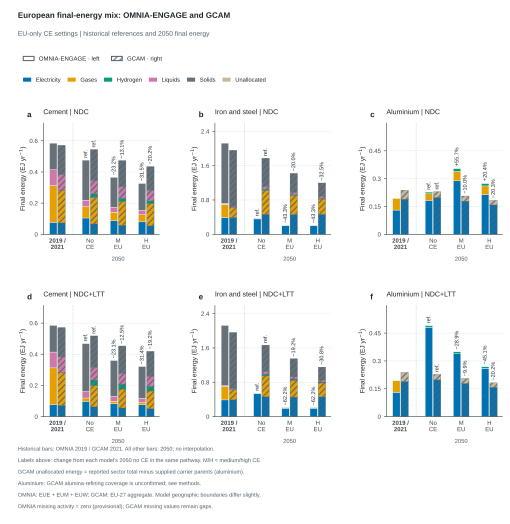
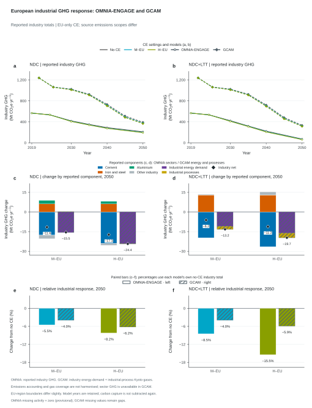

Three figures compare material production, final-energy mixes and reported industrial GHG under NDC and NDC+LTT, with no, medium and high CE in the EU.
OMNIA sums its EU model regions (EUE, EUM, EUW); GCAM uses its EU-27 aggregate. The boundaries differ slightly. Historical references use 2019 / 2021. GCAM aluminium's production-route and alumina-refining energy coverage remain unconfirmed; energy/output ratios are not harmonised efficiency comparisons. GCAM reports no matching sector GHG; Figure 3 compares source-defined industrial totals with explicit scope notes.
European material production: OMNIA-ENGAGE and GCAM
How do EU-only CE settings change material output in the two models?

European production in a 2 × 3 layout: NDC above NDC+LTT, with cement, steel and aluminium columns. Each category pairs OMNIA-ENGAGE on the left with hatched GCAM on the right. Historical bars use the model's own no-CE scenario at 2019 (OMNIA) or 2021 (GCAM); future categories show no, medium and high CE in the EU in 2050. EU+ scenarios are excluded. OMNIA metal output stacks primary and secondary routes; GCAM bars show its reported metal output. The custom GCAM aluminium series does not establish whether primary and secondary output are both included. Its route coverage is unconfirmed and is not assumed equivalent to OMNIA's combined output. GCAM's grey hatched output is not assigned to a production route. Cement excludes clinker; clinker is omitted because GCAM provides no corresponding series. OMNIA secondary shares are shown within sufficiently large segments. Future annotations use each model's own no-CE total under the same climate pathway in 2050: 100 × (scenario/reference − 1). Sector scales match across pathways and models. OMNIA totals sum EUE, EUM and EUW; GCAM selects its supplied EU-27 aggregate once, without adding country rows. These aggregates are checked against available-country sums. OMNIA regional boundaries include some small non-EU territories; membership is exported explicitly, so the two boundaries are not assumed identical. Source scenario names are retained: OMNIA baseline_* and GCAM LTT_* are displayed as NDC+LTT; ndc_* and NDC_* are displayed as NDC. Matching labels do not establish identical policy assumptions. OMNIA missing activity = zero (provisional); GCAM missing values remain gaps. Exact source variables, units, region memberships, conversion factors and calculation references accompany the source CSVs.
Figure 2
European final-energy mix: OMNIA-ENGAGE and GCAM
How do EU-only CE settings change final-energy demand and carrier mixes?

European final energy in a 2 × 3 layout with NDC above NDC+LTT and cement, steel and aluminium columns. Solid OMNIA-ENGAGE bars are paired with hatched GCAM bars in each category. Colours identify electricity, gases, hydrogen, liquids, solids and unallocated energy. Exact carrier parents enter each stack once. GCAM's reported sector total is retained; Unallocated is this total minus the sum of its supplied carrier parents (nonzero for aluminium). Missing fuel variables are not assigned to a carrier or silently imputed as zero. OMNIA totals sum the documented carrier parents. GCAM aluminium's alumina-refining coverage is unconfirmed; the Unallocated residual has no confirmed process or fuel attribution. Cross-model energy/output quotients are apparent ratios, not harmonised efficiency measures. Historical references use 2019 (OMNIA) and 2021 (GCAM), with no interpolation. Future bars compare no, medium and high EU-only CE in 2050. Each future percentage uses the same model, pathway and year's no-CE final energy. Sector scales match across pathways and models. OMNIA totals sum EUE, EUM and EUW; GCAM selects its supplied EU-27 aggregate once, without adding country rows. These aggregates are checked against available-country sums. OMNIA regional boundaries include some small non-EU territories; membership is exported explicitly, so the two boundaries are not assumed identical. Source scenario names are retained: OMNIA baseline_* and GCAM LTT_* are displayed as NDC+LTT; ndc_* and NDC_* are displayed as NDC. Matching labels do not establish identical policy assumptions. OMNIA missing activity = zero (provisional); GCAM missing values remain gaps. Exact source variables, units, region memberships, conversion factors and calculation references accompany the source CSVs.
Figure 3
European industrial GHG response: OMNIA-ENGAGE and GCAM
How does EU-only CE change each model's reported industrial GHG?

Reported European industrial GHG under NDC (left) and NDC+LTT (right). Panels a,b compare no, medium and high EU-only CE trajectories, with solid/open-circle OMNIA and dashed/filled-diamond GCAM lines at each model's supplied years from its historical reference onward. No interpolation, extrapolation or year displacement is used. OMNIA selects Emissions|GHG|Industry; GCAM sums Emissions|Kyoto Gases|Energy|Demand|Industry and Emissions|Kyoto Gases|Industrial Processes, both in Mt CO2-equiv/yr. These are source-defined industrial totals with different accounting scopes and potentially different gas coverage/GWP conventions, rather than harmonised sector totals. Panels c,d show signed 2050 CE-minus-no-CE changes, separately decomposed into OMNIA's cement, steel, aluminium and Other industry accounting residual, and GCAM's industrial energy demand and industrial processes. The component legends are model-specific; they do not imply a mapping between those categories. Positive and negative components stack independently from zero; black diamonds and signed labels give each model's net industrial change. Panels e,f show 100 × (CE − no CE) / no CE using each model's own source-defined industrial total in the same climate pathway and year. Both decomposition and percentage bars place OMNIA on the left and hatched GCAM on the right. Scales match across pathways within each row. Regional/partner decomposition from the reference Figure 7 is replaced because only EU-only data and unmatched sector emissions are available. Carbon capture is not subtracted again. OMNIA totals sum EUE, EUM and EUW; GCAM selects its supplied EU-27 aggregate once, without adding country rows. These aggregates are checked against available-country sums. OMNIA regional boundaries include some small non-EU territories; membership is exported explicitly, so the two boundaries are not assumed identical. Source scenario names are retained: OMNIA baseline_* and GCAM LTT_* are displayed as NDC+LTT; ndc_* and NDC_* are displayed as NDC. Matching labels do not establish identical policy assumptions. OMNIA missing activity = zero (provisional); GCAM missing values remain gaps. Exact source variables, units, region memberships, conversion factors and calculation references accompany the source CSVs.